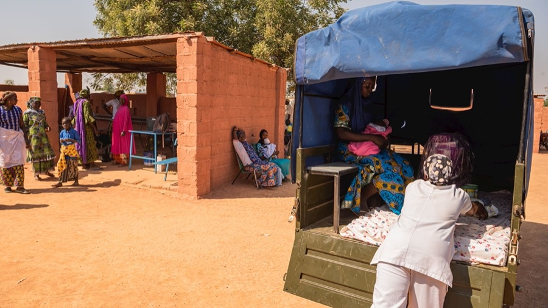
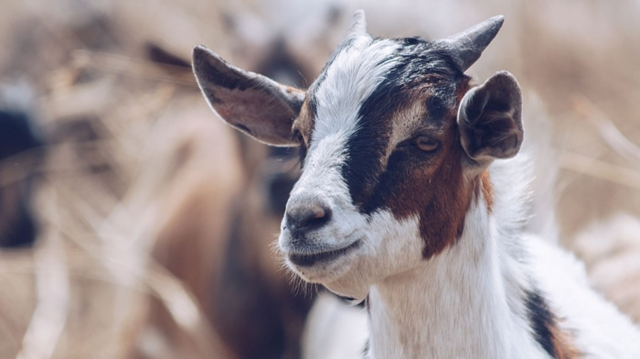
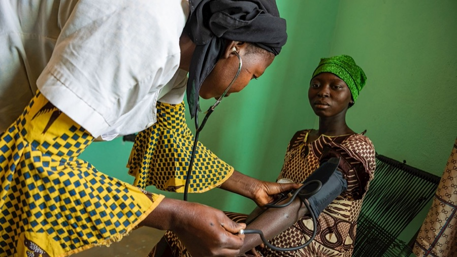
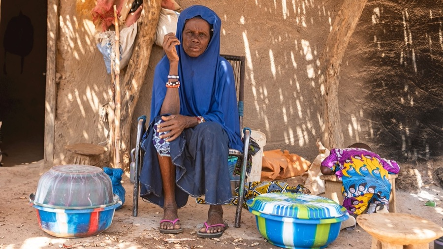
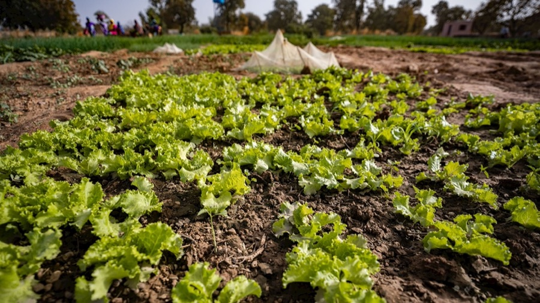
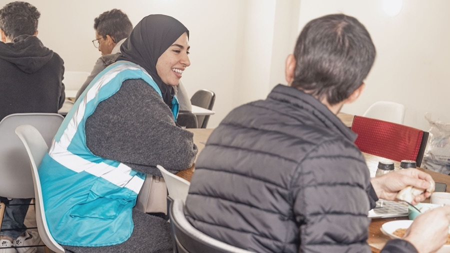

- Formation, matériel et suivi pendant douze mois
- Éligible à la zakat et à la sadaqa jariya
- 120 € vous coûtent 40,80 € après réduction d'impôt
Secourir d'abord, puis rendre autonome
Un colis nourrit une famille une semaine. Un métier la nourrit vingt ans. C'est tout le sens de nos programmes de moyens de subsistance.
Donner les moyens aux familles de sortir durablement de la pauvreté : c'est l'objectif. Financement d'une micro-activité, remise d'outils de travail, d'animaux d'élevage ou d'une formation professionnelle, nos équipes locales aident les familles les plus vulnérables à développer leur propre activité et à retrouver une autonomie financière.
Les veuves et les mères isolées sont prioritaires : ce sont elles qui, le plus souvent, portent seules une famille sans aucun revenu.

Quatre dons, quatre métiers
Chaque projet est remis en pleine propriété à la famille, avec la formation et le suivi qui vont avec.

Élevage de poules
120 € soit 40,80 € après impôt
Offrir un élevage de poules
Élevage de chèvres
250 € soit 85 € après impôt
Offrir un élevage de chèvres
Projet couture
350 € soit 119 € après impôt
Offrir un projet couture
Petit commerce
500 € soit 170 € après impôt
Financer un petit commerce
Puits et arbres fruitiers
1 200 € soit 408 € après impôt
Offrir ce projet
Fonds activités génératrices de revenus
Libre
Donner au fondsDouze mois, de la sélection à l'autonomie
Sélection
Nos équipes locales et les comités de village identifient les familles sans revenu, capables de porter une activité.
Formation
Élevage, couture, gestion d'un stock : quelques semaines de formation pratique avant la remise.
Remise du projet
Animaux, machine, kiosque et premier fonds de roulement, remis en pleine propriété à la famille.
Suivi
Visites régulières pendant un an pour ajuster, soigner les animaux, écouler la production. Rapport photo au donateur.
Des arbres et des semences contre la faim de demain
Au Sahel, un puits ne suffit pas : il faut aussi de quoi cultiver. Nos programmes associent le point d'eau à un potager, des semences et des arbres fruitiers, 18 000 déjà plantés au Mali, au Niger et au Sénégal.
Au Soudan, pour les familles qui s'installent durablement dans l'est après la guerre, nous remettons semences et petit élevage : la première récolte marque la fin de la dépendance aux distributions.

Un don qui peut relever de votre zakat
La zakat doit être remise aux ayants droit sous une forme dont ils disposent librement. Un élevage ou un fonds de commerce remis en pleine propriété à une famille pauvre répond à cette règle : cochez la case Zakat lors du don, nous le fléchons sur notre fonds zakat, séparé et audité.
Un élevage ou une activité financés au nom d'un proche disparu sont aussi une sadaqa jariya : tant que la famille en vit, la récompense se poursuit.

Questions fréquentes sur les moyens de subsistance
Qu'est-ce qu'un programme de moyens de subsistance ?
Un don qui remet à une famille pauvre de quoi gagner sa vie durablement : un élevage, une machine à coudre et une formation, un petit commerce avec son fonds de démarrage, des semences ou des arbres fruitiers.
Comment les familles sont-elles choisies ?
Par nos équipes locales, avec les comités de village : en priorité les veuves, les mères isolées et les familles sans revenu, capables de faire vivre l'activité après une formation.
Combien de temps dure l'accompagnement ?
Douze mois : formation, remise du matériel ou des animaux, puis visites régulières pour ajuster. Au bout d'un an, la famille vit de son activité.
Ces dons sont-ils éligibles à la zakat ?
Oui. Un élevage ou un fonds de commerce remis en pleine propriété à une famille pauvre peut être financé par la zakat : cochez la case Zakat lors du don.
Puis-je offrir un élevage au nom d'un proche décédé ?
Oui. C'est une sadaqa jariya : tant que l'activité fait vivre la famille, la récompense se poursuit. Vous recevez un rapport avec photos.
Offrir un métier à une famille
120 € vous coûtent 40,80 € après réduction d'impôt de 66 %.
Offrir un élevage de poulesReçu fiscal immédiat · éligible à la zakat · rapport photo

De l'aide à l'autonomie, en un an.
Le jour où une famille vend sa première récolte ou ses premiers œufs, elle n'a plus besoin de nous. C'est notre réussite.